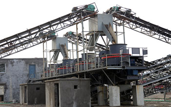

The effect of artificial sand production mainly related to the selection of sand making machine and sand making process, to get a good artificial sand, we must understand the relevant equipment in the sand. To this end, the following will be based on the actual production situation, try to describe the pros and cons of various sand making equipment.
Artificial sand (mainly manufactured sand) depends largely on the quality of artificial sand processing machinery and equipment, raw materials and also inseparable from manufacturing processes. In terms of equipment, sand making machine in accordance with the principles of the main points are broken jaw crusher, cone crusher, hammer crusher, impact crusher, roller crusher and impact crusher. Leading to the merits of the particle shape of the final product order: hammer crusher and impact crusher superior counterattack crusher, cone crusher, jaw crusher worst; but the former is higher manufacturing costs.
In order to get a better quality of artificial sand, you need to select a good sand making machine equipment, and the need to develop a good process parameters. Sand making machine as a domestic equipment manufacturing key manufacturers, responsible for the market to provide more high-quality equipment for the task. To help customers learn more information, eliminate the asymmetry of information, so that customers can buy a pretty good idea at the time, we have developed a number of convenient website, welcome to visit the landing, online free consultation.
In roads, construction and other projects, often requires a lot of sand and gravel aggregate, this set of mobile sand making machine devices will be able to meet the needs of artificial stone and sand production requirements at the same time. With the movement of sand crushing plant, not only to meet the needs of aggregate can also take advantage of mobile crushing station nearby crushing realization. Sand making plant is a production of construction sand and stone of special equipment, configuration, saving 15% than traditional sand production line. Sand making machine can put a variety of rock, sand and gravel, river gravel into compliance with various size of building sand, sandy uniform particle size, high strength, than natural sand, ordinary hammer crusher production more in line with architectural requirements , can enhance the quality of construction. In addition, the device also has a reliable, reasonable design, easy operation and high efficiency.
Live chat with our professional customer service! Get the quotation list.
Chat Now